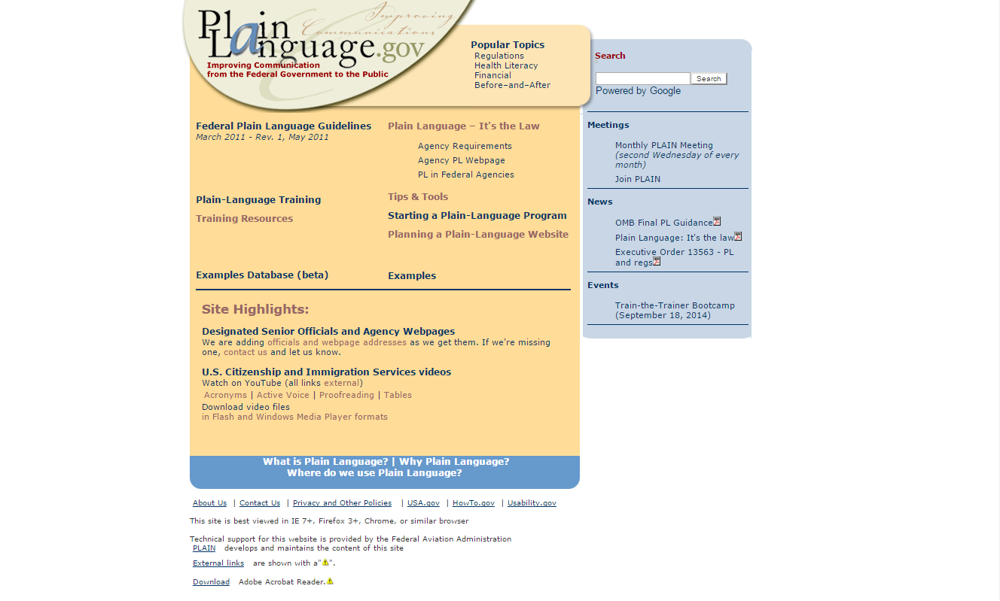

Plainlanguage.gov: Information Architecture
January, 2016
For my Information Architecture class, students were tasked with improving a website’s IA using site maps, wireframes, and a content analysis. I chose to restructure plainlanguage.gov, a website last updated in 2005. The website is currently riddled with unnecessary and outdated information along with confusing structure.
{kind=link}
The current plainlanguage.gov homepage
The final project was handed in as a PowerPoint presentation containing the content analysis, site maps, and wireframes. Click here to view it.
Challenges
Scope: The current plainlanguage.gov website is haphazardly massive, making it difficult to define a scope early on.
Client: There was no client for this project, so I created business goals which may not have reflected the organization’s actual goals.
Class Constraints: Students were given two weeks to complete the project including a site map, content analysis, and wireframe templates. No formal user research was conducted for this project due to the short timeframe.
Process
First I set the project’s business goals, design goals, scope, user groups, and risks in a "Project Overview" document. Then I created a site map to reflect the current state of the website’s structure, including the primary and secondary levels of the entire website as well as the tertiary level of one tab.

Current Site Map (created with Gliffy) View high-res PDF
This activity unveiled many problems with the website’s structure:
- The homepage did not reflect the website’s structure or content
- Categories were not targeted towards users’ typical needs
- The large amount of content on the website resulted in a complex structure
Content Evaluation
Conducting a qualitative and strategic content evaluation revealed many content issues. The most severe issues were about the findability, accuracy, and usability of the content:
Findability: Website Architecture and Navigation hide content from users and the “Search” function is broken.
Accuracy: The event displayed on the homepage is over 2 years old and many links (e.g. all on “examples” page) result in a 404.
Usability: Links are presented within long sentences and paragraphs, inhibiting “information scent” and skimming. Content that should be on one page is split into multiple pages.
See the full content evaluation in the appendix of the full report.
Updated Sitemap
The updated sitemap implemented a series of improvements:
- Eliminates unnecessary pages that don’t meet business goals (e.g. “Popular Topics,” “Useful Plain Language Quotes,” “Usability,” “HowTo.gov,” “Short, Funny Videos”, and more)
- Restructured the architecture so the homepage lies on the primary level with other important primary categories
- Rather than supplying information in tertiary links, important content is pushed to primary pages.
- The new categories were extrapolated from the personas and probable use cases of the website

Updated sitemap (created with InDesign)
Updated Wireframes
The final part of the project included a series of wireframe templates that reflected the changes to the sitemap. I chose to create the wireframes in Axure with a mobile-first approach to force a focus on the most important aspects of the interface.
{kind=link}
{kind=link}
Initial whiteboard sketches
{kind=link}
Homepage Wireframe (created with Axure)

Primary Landing Page

Non-Article Page
{kind=link}
Article Template
What I Would Do Differently
Conducting formal user research using card sorts and tree tests could have validated or contradicted some of my design choices.
I would have started with a smaller scope, then expanded if necessary.
Comparing each piece of content against the personas’ goals would have made it easier to decide what content should exist on the website.
What Went Well
Designing the wireframes mobile-first simplified the layout of the desktop view and kept the interfaces focused and uncluttered.
Doing this project from an information architecture perspective was a good idea, as it unveiled issues with the foundational structure of the website which affect the entire experience.